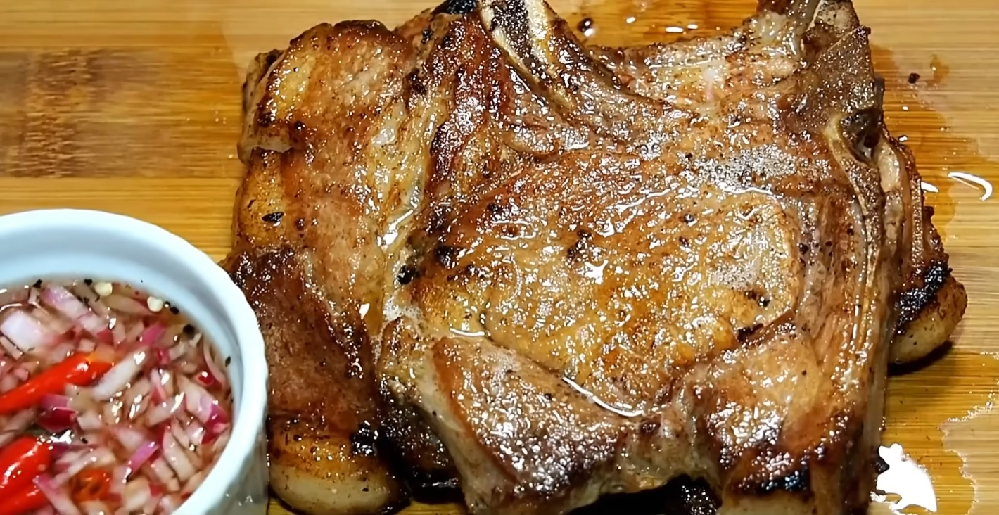

Tender Juicy Garlic Porkchop ala Young Fresho

Ingredients
-
Brine Solution
- 1 liter of Water
- 1 tbsp of Salt
- 1 tsp of Pepper Corn
- 1 tsp of Coriander ❨Optional❩
- 6 cloves of Garlic
- 2 pcs of Dried Bay Leaves
- 1 tsp of Soy Sauce
-
Marinade Solution
- 1 tsp of Salt
- 1 tsp of Pepper
- 1 tsp of Washed or White Sugar
- 1 tsp of Paprika ❨Optional❩
- 1 tbsp of Soy Sauce
- 1 tbsp of Cooking Oil
- 4 pcs of Pork Chops
- Cooking Oil
Steps
Preparing the Brine Solution
- Pour 1 liter of Water into a mixing bowl.
- Add 1 tbsp of salt, 1 tsp of Pepper Corn, 1 tsp of Coriander ❨Optional❩, 6 cloves of Garlic, 2
pcs of Dried Bay Leaves and 1 tsp of Soy Sauce.
- Stir all ingredients well.
- Boil the brine solution for 2-5 minutes to render the flavors.
- Let it cool to room temperature.
- While waiting to cool, score the fat of the pork to prevent it from curling up when cooking.
- When the brine solution cools down to room temperature, pour the brine into the pork.
- Let it sit for at least 30 minutes. You may also let it sit overnight.
- After letting it sit in the brine solution, take out the pork chops and let it dry.
Preparing the Marinade Solution
- On a separate container, mix 1 tsp of Salt, 1 tsp of Pepper, 1 tsp of Washed or White Sugar, 1 tsp of
Paprika
❨Optional❩, 1 tbsp of Soy Sauce and 1 tbsp of Cooking Oil.
- Before applying the marinade solution, make sure to dry the pork chops with tissue.
- Apply the marinade solution by brushing it to the pork chops.
- Marinate it for at least 30 minutes.
Frying the pork chops
- In a hot pan, pour cooking oil.
- When the cooking oil heats up, fry the pork chops in medium heat.
- Each side of the pork chops must be fried for about 3-5 minutes, or when the edges of the pork chops are
nicely crisp.